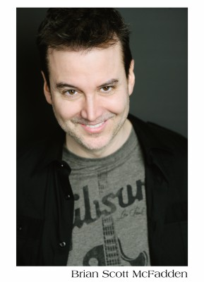

#1048 Das Erstaunliche Leben des Walter Mitty
Alternativ: The Secret Life of Walter Mitty


 IMDB-Wertung: 7.3 / 10
IMDB-Wertung: 7.3 / 10  Metascore: 54
Metascore: 54 
Walter Mitty führt ein zurückgezogenes Leben. Seit Jahren arbeitet er schon im Fotoarchiv des renommierten "Life!"-Magazins. Dem grauen Alltag versucht Walter durch Tagträume zu entfliehen, in denen er heldenhafte Abenteuer erlebt und die ganz große Liebe findet. Doch dann begegnet er seiner neuen Kollegin Cheryl und plötzlich ist die große Liebe Realität geworden. Doch Walter traut sich nicht, Cheryl anzusprechen. Als bekanntgegeben wird, dass das Magazin nur noch online erscheinen wird, läuft Walter Gefahr, auch noch seinen Job zu verlieren. Die letzte Print-Ausgabe des Magazins soll das Bild des bekannten "Life!"-Fotografen Sean O‘Connell zieren, doch ausgerechnet dieses Foto ist verschwunden. Walter nimmt seinen ganzen Mut zusammen und begibt sich für seinen Job und seine große Liebe auf ein Abenteuer, von dem er sonst immer nur geträumt hat.
Jahr: 2013
Dauer: 114 Minuten
FSK: 6
Land: USA Studio: 20th Century FoxTonspuren: DTS - ,
Untertitel: Deutsch, Englisch,
Auflösung: 1080p (1920x800) Größe: 7823 MB
Genre: Abenteuer, Komödie, Drama, Fantasy, Liebe
Regisseur:  Ben Stiller
Ben Stiller
Drehbuch: Steve Conrad, Steve Conrad, James Thurber
Soundtrack: Theodore Shapiro
Darsteller:
 Ben Stiller als Walter Mitty
Ben Stiller als Walter Mitty Kristen Wiig als Cheryl Melhoff
Kristen Wiig als Cheryl Melhoff Jon Daly als Tim Naughton
Jon Daly als Tim Naughton Kathryn Hahn als Odessa Mitty
Kathryn Hahn als Odessa Mitty Terence Bernie Hines als Gary Mannheim
Terence Bernie Hines als Gary Mannheim Adam Scott als Ted Hendricks
Adam Scott als Ted Hendricks- Paul Fitzgerald als Don Proctor
 Grace Rex als Cheryl's Co-Worker
Grace Rex als Cheryl's Co-Worker- Alex Anfanger als Ted's Toner Box Associate
 Adrian Martinez als Hernando
Adrian Martinez als Hernando Joey Slotnick als Retirement Home Administrator
Joey Slotnick als Retirement Home Administrator Shirley MacLaine als Edna Mitty
Shirley MacLaine als Edna Mitty Gary Wilmes als Walter's Dad
Gary Wilmes als Walter's Dad- Marcus Antturi als Rich Melhoff
 Ólafur Darri Ólafsson als Helicopter Pilot
Ólafur Darri Ólafsson als Helicopter Pilot- Hendrikus Schraven als Trawler 2nd Mate
- Seba Alón als Chilean Sailor
- Martin Lagos als Chilean Sailor
 Kai Lennox als Phil Melhoff
Kai Lennox als Phil Melhoff Conan O'Brien als Conan O'Brien
Conan O'Brien als Conan O'Brien Andy Richter als Andy Richter
Andy Richter als Andy Richter Gurdeep Singh als Cab Driver
Gurdeep Singh als Cab Driver- Anthony Desio als Mover
 Sean Penn als Sean O'Connell
Sean Penn als Sean O'Connell- Liz Mikel als TSA Skeleton #2
-  Brian Scott McFadden als TSA Officer #1
 Patton Oswalt als Todd Maher
Patton Oswalt als Todd Maher Richard DeDomenico als Piano Wholesaler
Richard DeDomenico als Piano Wholesaler Matt Levin als Board Meeting Guy
Matt Levin als Board Meeting Guy Craig Castaldo als News Stand Guy
Craig Castaldo als News Stand Guy George Aloi als Life Magazine Employee , uncredited
George Aloi als Life Magazine Employee , uncredited- Katelynn Bailey als Schoolgirl , uncredited
- Jerome Brooks Jr. als Business Man , uncredited
- Brady Bryson als Boy in Park , uncredited
- Robert Chang als Life Employee , uncredited
- Emily Chapman als Pedestrian , uncredited
 Greg Cipes als Time Life Employee , uncredited
Greg Cipes als Time Life Employee , uncredited- Don Ellione als Driver of Green Corolla , uncredited
- Gary Ferster als Time Life Employee , uncredited
- Samantha Gelnaw als Pedestrian , uncredited
 Brian Gildea als Pedestrian , uncredited
Brian Gildea als Pedestrian , uncredited- Efraiem Hanna als Airline Ticket Agent , uncredited
 Rosemary Howard als 1940s Winter Pedestrian , uncredited
Rosemary Howard als 1940s Winter Pedestrian , uncredited- Zivile Kaminskaite als International Tourist , uncredited
 Ilan Krigsfeld als Blue Collar Worker #3 , uncredited
Ilan Krigsfeld als Blue Collar Worker #3 , uncredited- Alex Kruz als Time Life Employee , uncredited
- Lexie LaPlante als Traveler , uncredited
- Adam Leong als NYC Pedestrian , uncredited
- Lucinda Lewis als Time Life Employee , uncredited
- Guillermo Lozano als Man , uncredited
Datei: X:\2013(A-F)\Erstaunliche Leben des Walter Mitty, Das (2013, FSK6, 1920x800).mkv seit 15.05.2015
Festplatte: HD 2012(N-Z)-2013(A-H)
 Es gibt insgesamt 127 Filme in der Gruppe '2013(A-F)'
Es gibt insgesamt 127 Filme in der Gruppe '2013(A-F)'